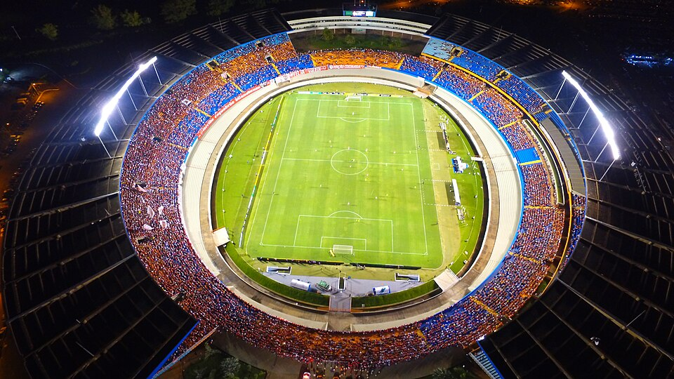

Economia
Ibovespa atinge recorde histórico com entrada de capital estrangeiro

Índice Bovespa registrou alta de 1,8% nesta quarta — REUTERS
Analistas atribuem o movimento à percepção de estabilidade fiscal e à queda dos juros nos Estados Unidos.
Saúde
SUS inicia campanha nacional de vacinação contra dengue
Ministério da Saúde prevê imunizar 8 milhões de brasileiros até o fim do inverno.
Manchete Principal
Cúpula do Clima define meta de emissão zero para 2045 em acordo inédito
Líderes de 40 países se reúnem em Genebra para cúpula climática — AP Photo
Representantes de 40 nações assinaram nesta quarta o Pacto de Genebra, considerado o compromisso ambiental mais ambicioso da história moderna. O texto prevê eliminação gradual dos combustíveis fósseis e fundo de US$ 500 bilhões para países em desenvolvimento.
"É um momento de virada. O mundo decidiu que não há mais tempo para hesitar", declarou a secretária-geral da ONU durante a cerimônia de assinatura.
Esporte
Brasil define lista de 26 para a Copa América com quatro estreantes

Copa América começa em julho com 16 seleções — Getty Images
Técnico surpreende ao convocar jovens talentos do Palmeiras e do Flamengo. Convocação foi anunciada nesta manhã em coletiva no Rio.
Cultura
Mostra de cinema brasileiro em Cannes exibe 12 longas inéditos
Festival acontece de 14 a 25 de maio; três produções nacionais concorrem à Palma de Ouro.